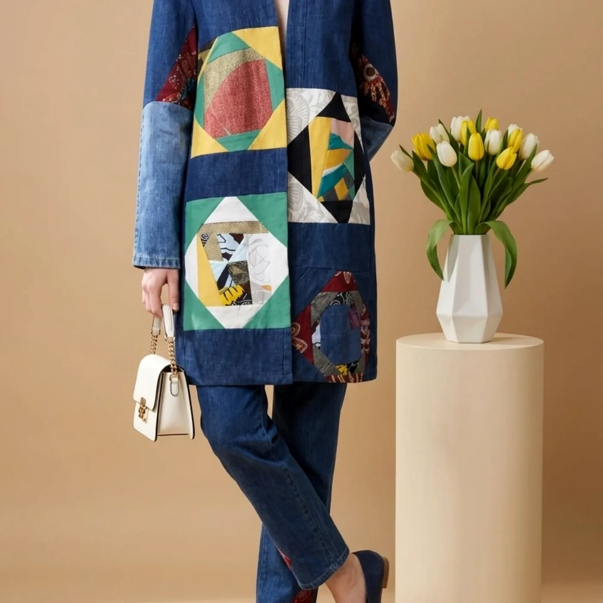
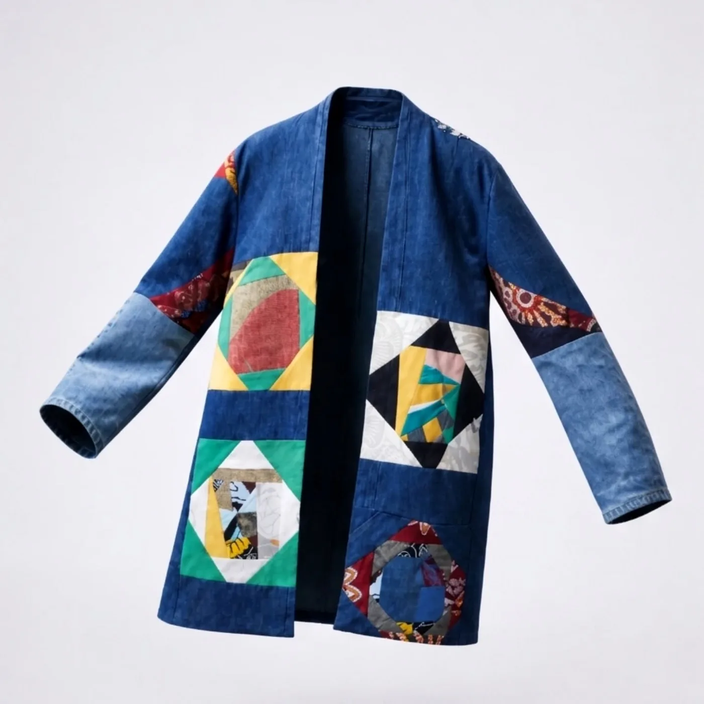
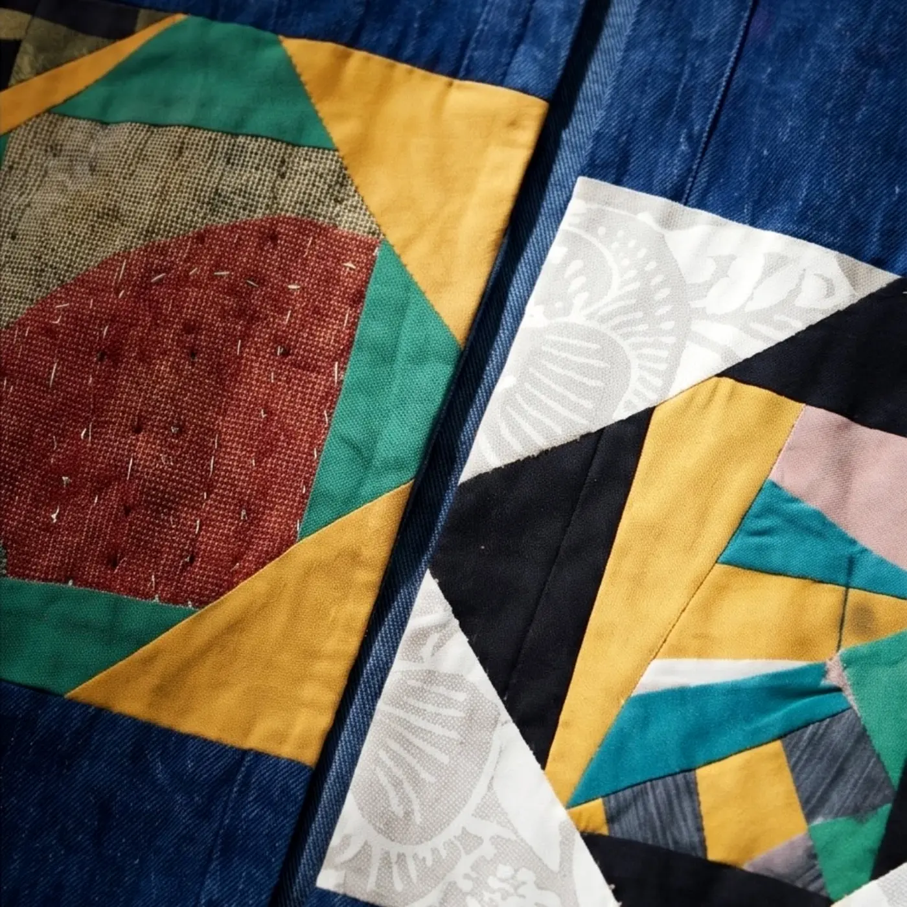
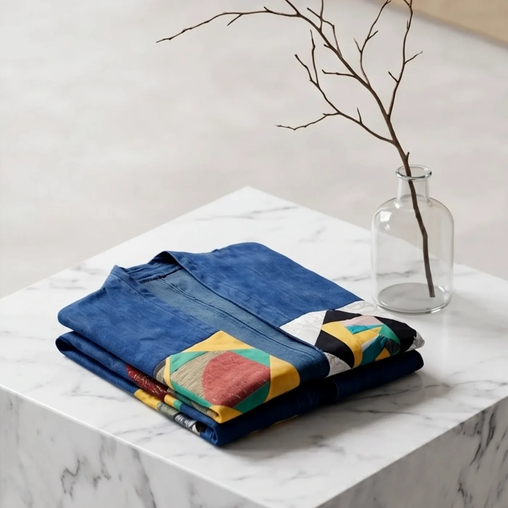
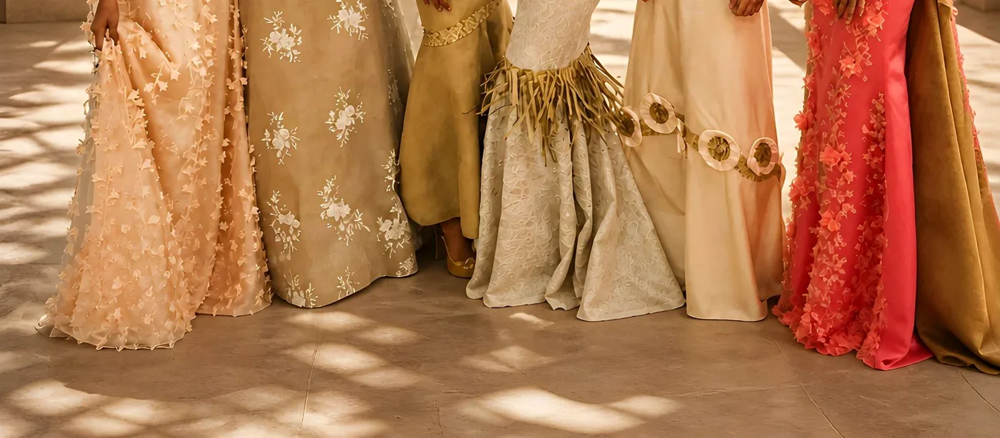
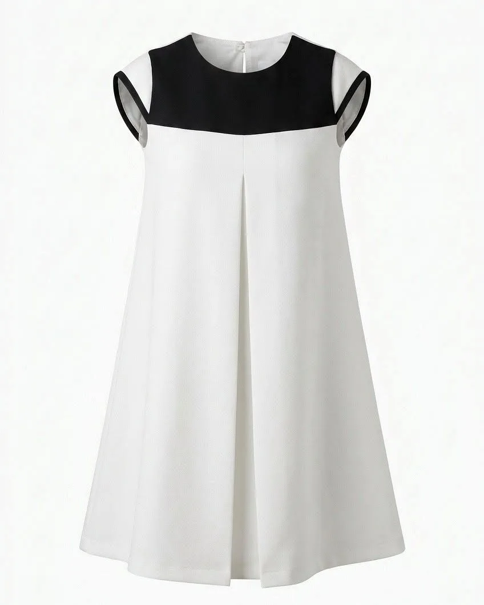

La styliste qui vous fait voyager !— sa bannière Facebook
L'atelier
Christ Ray signe des vêtements à Saint-André, dans l'Est de La Réunion. Chaque pièce porte une intention : mettre en valeur l'héritage réunionnais, ses matières et ses couleurs, et le faire voyager sur les podiums comme au quotidien.
« À travers mes créations je sublime le patrimoine réunionnais et j'honore mes ancêtres. »
— Christ Ray, présentation de sa page Facebook
Collection
Un denim profond, éclairé de triangles moutarde, turquoise, corail et bordeaux : la série publiée le 31 mai 2026 joue la géométrie comme un tissage de cultures.




Souvenir
Broderies, tons corail, crème et or, chapeaux tressés : une collection que Christ Ray partage comme un souvenir, avec ses propres mots-clés.
Galerie

Faites glisser pour voir la suite →
Offrir pour Noël
Une pièce imaginée par Christ Ray, c'est un morceau de La Réunion qui voyage avec celle ou celui qui la reçoit. Parlons-en directement avec la créatrice.
Message prêt à envoyer sur le WhatsApp de Christ Ray
Contact
Atelier à Saint-André. Le plus simple : un appel ou un message WhatsApp pour échanger sur votre projet.